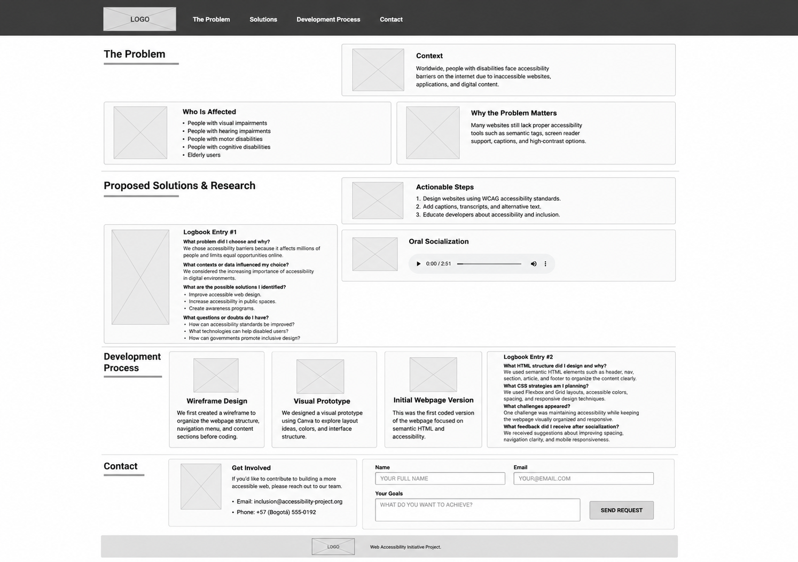
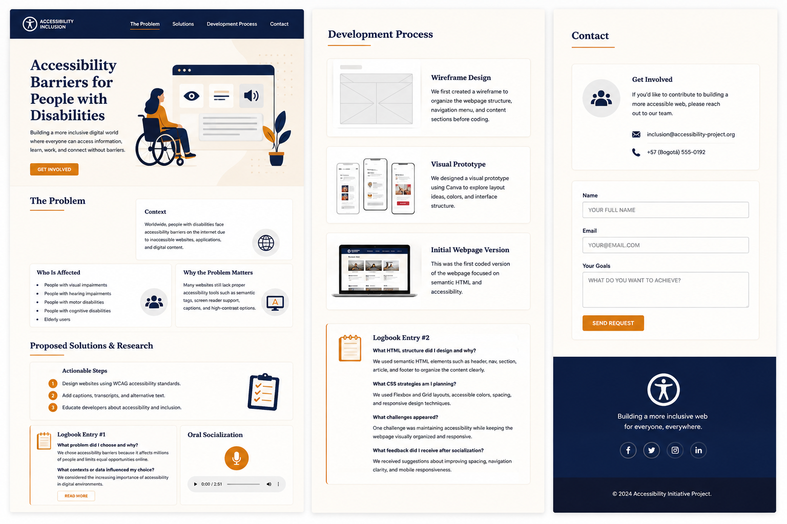
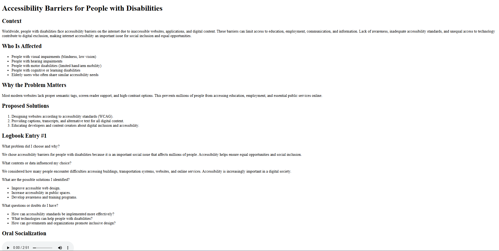

Context
Worldwide, people with disabilities face accessibility barriers on the internet due to inaccessible websites, applications, and digital content.
Worldwide, people with disabilities face accessibility barriers on the internet due to inaccessible websites, applications, and digital content.
Many websites still lack proper accessibility tools such as semantic tags, screen reader support, captions, and high-contrast options.
What problem did I choose and why?
We chose accessibility barriers because it affects millions of people and limits equal opportunities online.
What contexts or data influenced my choice?
We considered the increasing importance of accessibility in digital environments.
What are the possible solutions I identified?
What questions or doubts do I have?
We first created a wireframe to organize the webpage structure, navigation menu, and content sections before coding.

We designed a visual prototype using Canva to explore layout ideas, colors, and interface structure.

This was the first coded version of the webpage focused on semantic HTML and accessibility.

This was the first coded version of the webpage focused on semantic HTML and accessibility.

What HTML structure did I design and why?
We used semantic HTML elements such as header, nav, section, article, and footer to organize the content clearly.
What CSS strategies am I planning?
We used Flexbox and Grid layouts, accessible colors, spacing, and responsive design techniques.
What challenges appeared?
One challenge was maintaining accessibility while keeping the webpage visually organized and responsive.
What feedback did I receive after socialization?
We received suggestions about improving spacing, navigation clarity, and mobile responsiveness.
If you'd like to contribute to building a more accessible web, please contact our team.